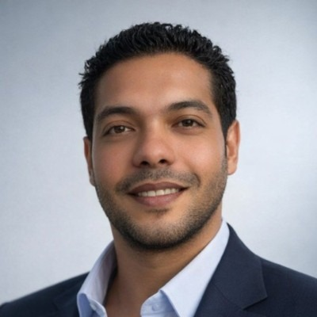

The schedule says when.
ChronoMap shows where.البرنامج الزمني يقول متى.
كرونوماب يُريك أين.
ChronoMap Planning plays your Primavera P6 programme on the real site map, day by day. Every activity sits where it happens, so the site team, the planning office and the client read the same picture.كرونوماب يشغّل برنامج Primavera P6 على خريطة الموقع الحقيقية، يومًا بيوم. كل نشاط يظهر في مكانه، فيرى فريق الموقع ومكتب التخطيط والعميل الصورة نفسها.
What is ChronoMap Planning?ما هو كرونوماب؟
A 73-second introduction: your P6 programme, linked to the site, played day by day.تعريف في ٧٣ ثانية: برنامجك على P6، مربوطًا بالموقع، يعمل يومًا بيوم.
Planning services, delivered with ChronoMapخدمات تخطيط متكاملة، مدعومة بكرونوماب
From a new baseline to a recovery programme: a planner-built P6 schedule, and a ChronoMap that lets everyone see it.من برنامج أساسي جديد إلى برنامج تعافٍ: برنامج P6 يبنيه مخطِّط، وكرونوماب يجعل الجميع يراه.
However complex the project, see what is happening everywhereمهما كان المشروع معقدًا، اعرف ما يجري في كل مكان
New baseline programmeبرنامج زمني أساسي جديد
A complete P6 baseline built from the contract documents and engineering drawings, delivered with its ChronoMap.برنامج P6 أساسي كامل يُبنى من المستندات التعاقدية والرسومات الهندسية، ومعه الكرونوماب الخاص به.
- WBS, activities, logic and durations from the contract and drawingsهيكل العمل والأنشطة والعلاقات والمدد من العقد والرسومات
- Every activity linked to its location on the site mapربط كل نشاط بمكانه على خريطة الموقع
- Full supporting documents: narrative, method statement, resources and cash flowكل المستندات الداعمة: التقرير الوصفي، طريقة التنفيذ، الموارد والتدفق النقدي
- Ready for consultant submission and approvalجاهز للتقديم للاستشاري واعتماده
Convert your programme to ChronoMapتحويل برنامجك إلى كرونوماب
Your existing P6 schedule turned from a traditional Gantt into a live ChronoMap, kept up to date.برنامجك الحالي في P6 يتحول من مخطط جانت تقليدي إلى كرونوماب حي، ويبقى محدَّثًا.
- Activities linked to the site, nothing changed in P6ربط الأنشطة بالموقع دون تغيير في P6
- Periodic updates with planned vs verified actual progressتحديثات دورية بالمخطط مقابل المنجز المثبت
- Complete dashboard: S-curve, crews, site variance and statusداشبورد كاملة: منحنى S، الفرق، الفرق في الموقع، والحالة
- Interactive file and video for progress meetingsملف تفاعلي وفيديو لاجتماعات التقدّم
Recovery or revised programmeبرنامج تعافٍ أو برنامج معدَّل
A recovery or revised schedule based on the contract documents, with a visual explanation of every change from the baseline.برنامج تعافٍ أو معدَّل مبني على المستندات التعاقدية، مع تفسير مرئي لكل تغيير عن البرنامج الأساسي.
- Built on the contract terms and the delay eventsمبني على بنود العقد وأحداث التأخير
- Baseline and new programme side by side on one map and one clockالأساسي والجديد جنبًا إلى جنب على خريطة واحدة وساعة واحدة
- Delay impact shown where it happens, to support EOT under FIDICأثر التأخير يظهر في مكانه، لدعم طلب التمديد وفق فيديك
- Presentation pack for the client and consultantحزمة عرض للعميل والاستشاري
One approach, any projectمنهج واحد، لأي مشروع
Stormwater & utility networksشبكات تصريف الأمطار والمرافق
Each pipe line changes colour on the day it is built, and crews move across the streets as the schedule says.كل خط يتلوّن يوم تنفيذه، والفرق تتحرك في الشوارع كما يقول البرنامج.
- Baseline and revised on the same clockالأساسي والمعدّل على الساعة نفسها
- Delays shown where they actually happenالتأخير يظهر في مكانه الفعلي
- Crews, S-curve and site varianceالفرق ومنحنى S والفرق في الموقع
Interchange bridges in 3Dكباري التقاطعات ثلاثية الأبعاد
Deck units appear stage by stage in the order of the programme, with piers and piles in the same model.وحدات البلاطات تظهر مرحلة بمرحلة بترتيب البرنامج، والركائز والخوازيق في النموذج نفسه.
- The critical crossing over live traffic, visible before it is builtالعبور الحرج فوق الحركة المرورية واضح قبل التنفيذ
- Click any unit to read its stage and supportsاضغط أي وحدة لتقرأ مرحلتها وركائزها
Drawing data, dates and figures hidden for confidentiality.بيانات الرسومات والتواريخ والأرقام مخفية للسرية.
Dams, layer by layerالسدود، طبقة بطبقة
The embankment rises on the dates the schedule says, on a 3D model of the valley, with work sites and delays where they happen.جسم السد يرتفع على تواريخ البرنامج، على نموذج ثلاثي الأبعاد للوادي، مع مواقع العمل والتأخير في أماكنها.
- Baseline, update and variance on one modelالأساسي والتحديث والفرق على نموذج واحد
- Click an element to see the activities behind itاضغط أي عنصر لترى الأنشطة خلفه
Project dates and figures hidden for confidentiality.تواريخ المشروع وأرقامه مخفية للسرية.

Mustafa Magdy ElAwsمصطفي مجدي العوص
I plan and control projects of every type: buildings, infrastructure, utilities, transit and industrial works, with major projects in Saudi Arabia. ChronoMap came from a simple frustration in progress meetings: an accurate schedule that most people in the room could not read. I built it so the programme could be seen where the work happens.أعمل في تخطيط ومراقبة المشاريع بكل أنواعها: المباني، والبنية التحتية، والمرافق، والنقل، والأعمال الصناعية، مع مشاريع كبرى في السعودية. وُلد كرونوماب من مشكلة بسيطة في اجتماعات التقدّم: برنامج دقيق لا يستطيع أغلب الحاضرين قراءته. فبنيته ليُرى البرنامج في مكان العمل نفسه.
See your own project on the mapشاهد مشروعك على الخريطة
Send a message with the project type and what you need it for. A short sample on your own data is the fastest way to see the difference.أرسل رسالة بنوع المشروع والغرض منه. عرض قصير على بياناتك هو أسرع طريقة لترى الفرق.